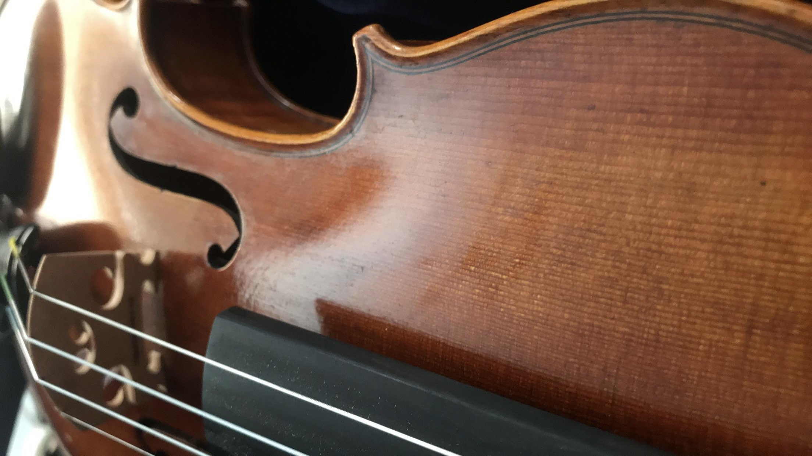

TJ Layug
I am 4th year Computer Science Major at San Francisco State University. I like to create things that I would use and other people would use too. Some of my hobbies include playing the violin and coding random projects.